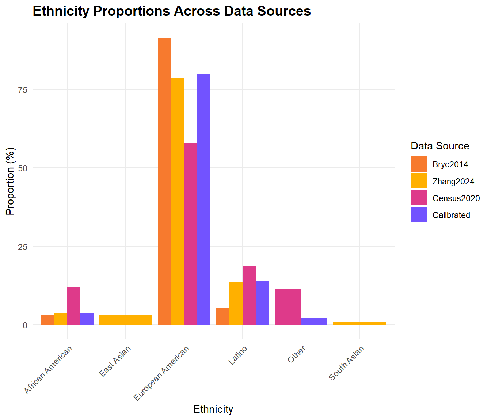
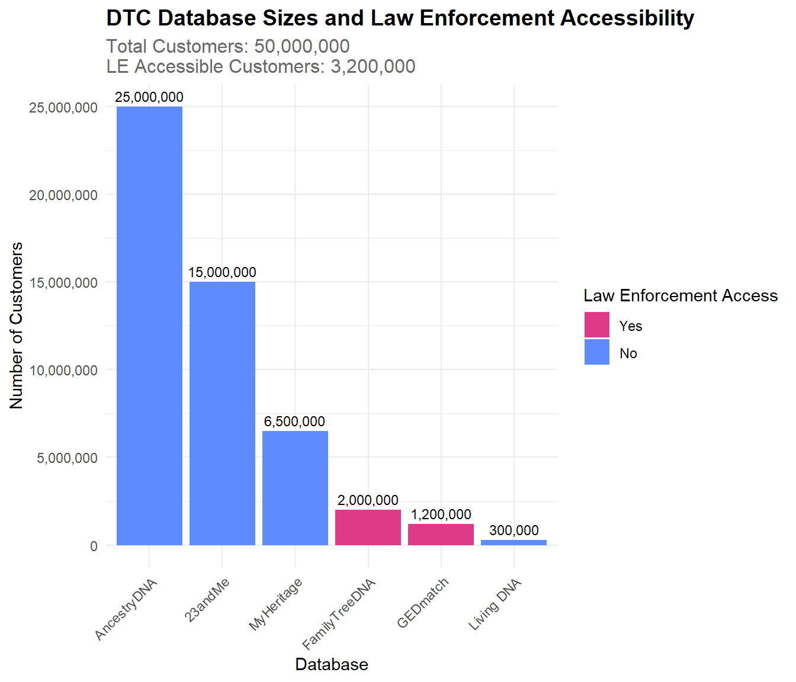
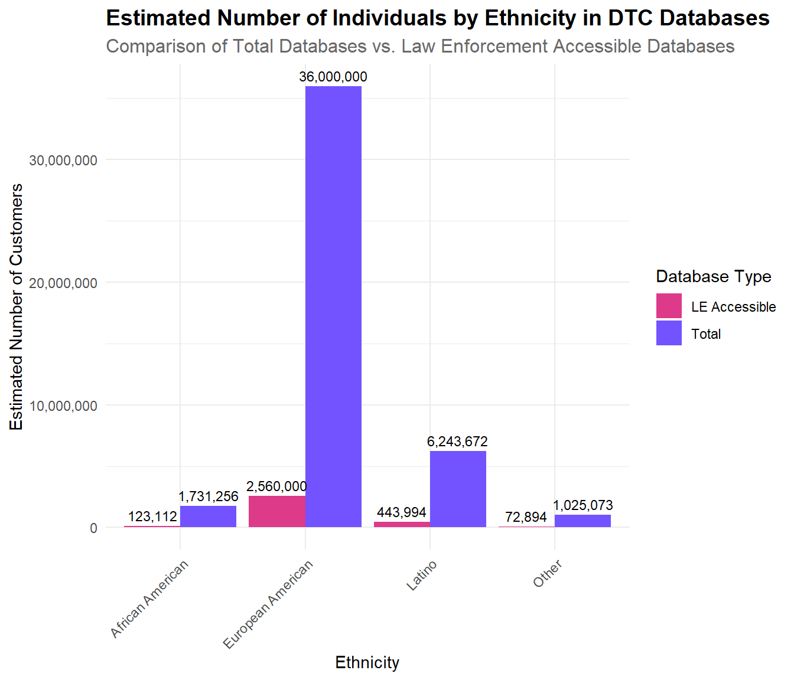
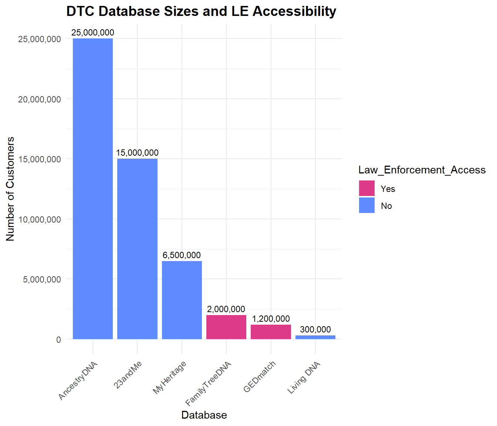
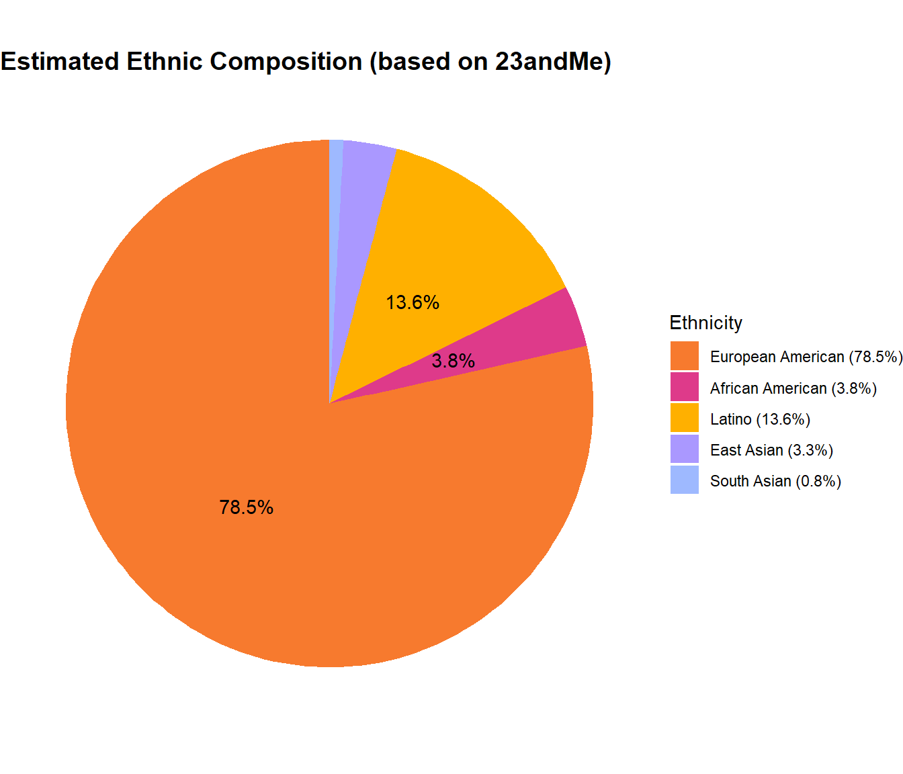

Last updated: 2024-10-04
Checks: 6 1
Knit directory: PODFRIDGE/
This reproducible R Markdown analysis was created with workflowr (version 1.7.1). The Checks tab describes the reproducibility checks that were applied when the results were created. The Past versions tab lists the development history.
The R Markdown file has unstaged changes. To know which version of
the R Markdown file created these results, you’ll want to first commit
it to the Git repo. If you’re still working on the analysis, you can
ignore this warning. When you’re finished, you can run
wflow_publish to commit the R Markdown file and build the
HTML.
Great job! The global environment was empty. Objects defined in the global environment can affect the analysis in your R Markdown file in unknown ways. For reproduciblity it’s best to always run the code in an empty environment.
The command set.seed(20230302) was run prior to running
the code in the R Markdown file. Setting a seed ensures that any results
that rely on randomness, e.g. subsampling or permutations, are
reproducible.
Great job! Recording the operating system, R version, and package versions is critical for reproducibility.
Nice! There were no cached chunks for this analysis, so you can be confident that you successfully produced the results during this run.
Great job! Using relative paths to the files within your workflowr project makes it easier to run your code on other machines.
Great! You are using Git for version control. Tracking code development and connecting the code version to the results is critical for reproducibility.
The results in this page were generated with repository version b09ef12. See the Past versions tab to see a history of the changes made to the R Markdown and HTML files.
Note that you need to be careful to ensure that all relevant files for
the analysis have been committed to Git prior to generating the results
(you can use wflow_publish or
wflow_git_commit). workflowr only checks the R Markdown
file, but you know if there are other scripts or data files that it
depends on. Below is the status of the Git repository when the results
were generated:
Ignored files:
Ignored: .RData
Ignored: .Rhistory
Ignored: .Rproj.user/
Unstaged changes:
Modified: analysis/database-composition.Rmd
Modified: output/dtc_demographics_summary.png
Note that any generated files, e.g. HTML, png, CSS, etc., are not included in this status report because it is ok for generated content to have uncommitted changes.
These are the previous versions of the repository in which changes were
made to the R Markdown (analysis/database-composition.Rmd)
and HTML (docs/database-composition.html) files. If you’ve
configured a remote Git repository (see ?wflow_git_remote),
click on the hyperlinks in the table below to view the files as they
were in that past version.
| File | Version | Author | Date | Message |
|---|---|---|---|---|
| Rmd | b09ef12 | Stella-Joy | 2024-10-02 | building html (workflowr command) |
| html | b09ef12 | Stella-Joy | 2024-10-02 | building html (workflowr command) |
| Rmd | 0bacc1e | Stella-Joy | 2024-10-02 | updates to dtc figures |
| html | 0bacc1e | Stella-Joy | 2024-10-02 | updates to dtc figures |
| Rmd | 1226c50 | Stella-Joy | 2024-10-01 | Troubleshooting numbers issue |
| html | 1226c50 | Stella-Joy | 2024-10-01 | Troubleshooting numbers issue |
| Rmd | 3700874 | Stella-Joy | 2024-09-27 | update DTC (small) |
| Rmd | 6e41e03 | Stella-Joy | 2024-09-27 | updating dtc figures |
| html | 6e41e03 | Stella-Joy | 2024-09-27 | updating dtc figures |
| Rmd | f6e9033 | Stella-Joy | 2024-09-25 | Updating file with new analysis |
| Rmd | 667a5d6 | Stella-Joy | 2024-09-24 | uploading data |
| Rmd | b8d3d1e | Tina Lasisi | 2024-09-21 | Update database-composition.Rmd |
| html | f143ee1 | tinalasisi | 2024-09-16 | Revised website |
| Rmd | c7eb982 | Stella-Joy | 2024-09-04 | Small color shift in Race gradient |
| html | 70651c7 | Stella-Joy | 2024-09-04 | knit DTC figures |
| Rmd | 785760b | Stella-Joy | 2024-09-04 | Creating DTC figures |
| Rmd | f3f52cd | Stella-Joy | 2024-09-03 | DTC access visual |
| html | cf281b6 | Tina Lasisi | 2024-03-03 | Build site. |
| Rmd | 2596546 | Tina Lasisi | 2024-03-03 | wflow_publish("analysis/*", republish = TRUE, all = TRUE, verbose = TRUE) |
| html | 48acb9f | Tina Lasisi | 2024-03-02 | Build site. |
| html | aa3ff5c | Tina Lasisi | 2024-03-01 | Build site. |
| html | e4c698e | Tina Lasisi | 2024-02-27 | Publish new pages + update plots |
| Rmd | b6c047d | Tina Lasisi | 2024-01-26 | update extensions |
| html | 9e71347 | Tina Lasisi | 2024-01-22 | Build site. |
| Rmd | 1f3a662 | Tina Lasisi | 2024-01-22 | Republish website with database composition page. |
| Rmd | 9bbc7fb | Tina Lasisi | 2024-01-21 | Add new page for database composition + data |
In this analysis, we present our estimates regarding direct-to-consumer (DTC) genetic testing databases. Our approach consists of three main components:
We use published data from 23andMe as a foundation to estimate the proportions of African Americans (or Black Americans) and European Americans (or White Americans) in DTC databases. These proportions form the basis for our subsequent analyses. We studied the genetic ancestry of 5,269 self-described African Americans, 8,663 Latinos, and 148,789 European Americans who are 23andMe customers.
We compile and present data on major DTC companies, including their reported database sizes and policies on law enforcement accessibility. This information helps us estimate the total size of DTC databases and the portion that might be accessible to law enforcement, which is crucial for the analyses in our manuscript.
Finally, we synthesize this information to estimate the number and proportion of African Americans and European Americans represented across all DTC databases, as well as those accessible to law enforcement.
Our analysis draws on several key sources:
Bryc et al. (2014) and Zhang et al. (2024): These studies utilized 23andMe databases and provide information on the self-identified ethnic and racial groups of participants.
Tung et al. (2011) “Characteristics of an Online Consumer Genetic Research Cohort”: This poster, presented at the 2011 American Society of Human Genetics (ASHG) meeting by 23andMe representatives, forms the basis for our assumption of 80% European American representation in DTC databases. We use this assumption to calibrate relative proportions of other demographic groups.
Publicly available information from DTC companies regarding their database sizes and law enforcement access policies.
By combining these sources, we aim to provide a comprehensive overview of the demographic composition of DTC genetic databases and their potential implications for genetic research and forensic applications.
Here is the data from Bryc et al. and Zhang et al., estimating the self-identified ethnic and racial groups of participants in the 23andMe database.
| Source | Ethnicity | Number_of_Customers | Total | Proportion |
|---|---|---|---|---|
| Bryc2014 | European American | 148789 | 162721 | 91.438106 |
| Bryc2014 | African American | 5269 | 162721 | 3.238058 |
| Bryc2014 | Latino | 8663 | 162721 | 5.323836 |
| Source | Ethnicity | Number_of_Customers | Total | Proportion |
|---|---|---|---|---|
| Zhang2024 | European American | 2050678 | 2612044 | 78.5085550 |
| Zhang2024 | African American | 98618 | 2612044 | 3.7755107 |
| Zhang2024 | Latino | 355660 | 2612044 | 13.6161565 |
| Zhang2024 | East Asian | 84912 | 2612044 | 3.2507875 |
| Zhang2024 | South Asian | 22176 | 2612044 | 0.8489903 |
And below is the U.S. Census Data, estimating totals in these ethnic and racial categories.
| Source | Ethnicity | Number_of_Customers | Total | Proportion |
|---|---|---|---|---|
| Census2020 | European American | 191697647 | 331449281 | 57.83619 |
| Census2020 | African American | 39940338 | 331449281 | 12.05021 |
| Census2020 | Latino | 62080044 | 331449281 | 18.72988 |
| Census2020 | Other | 37731252 | 331449281 | 11.38372 |
Using the totals from both sources that utilize the data from the 23andMe DTC database, we have calculated ratios of European American to African American and European American to Latino DTC Customers. These ratios display the greater number of European Americans in the database than African Americans or Latinos. For example, for every African American customer, there are approximately 28.24 European American customers based on the Bryc et. al data.
| Source | European American | African American | Latino | EA_AA_Ratio | EA_Latino_Ratio |
|---|---|---|---|---|---|
| Bryc2014 | 148789 | 5269 | 8663 | 28.23857 | 17.175228 |
| Zhang2024 | 2050678 | 98618 | 355660 | 20.79416 | 5.765838 |
Next, we’re creating a calibrated estimate assuming European Americans represent 80% of the samples. This assumption is based on a poster presented at ASHG 2011. We use the ratios from the more recent Zhang 2024 study to estimate the proportions of other ethnicities.
| Ethnicity | Number_of_Customers | Proportion |
|---|---|---|
| European American | 80000.000 | 80.000000 |
| African American | 3847.235 | 3.847235 |
| Latino | 13874.826 | 13.874826 |
| Other | 2277.939 | 2.277939 |
To interpret this data, understand that the estimated number of African American customers make up approximately 3.85% of the total. The following graph displays these calibrated totals alongside our data source totals. It shows that overwhelmingly, across all categories, European Americans make up the majority proportion of DTC customers compared to all other ethnicities and racial categories.

Here, we explore the size of each of the six major DTC databases, as well as their Law Enforcement (LE)’s access to each database.
The following bar chart displays both law enforcement accessibility and total numbers for each of the major DTC databases.

The companies that law enforcement can access are FamilyTreeDNA and GEDmatch. FamilyTreeDNA allows users to opt out but have a history of violating their Terms of Service. GEDmatch also sells access to law enforcement and has a history of violating their Terms of Service, but since the law enforcement used this database to find the Golden State Killer in 2018, they have created an opt-in option for sharing data with law enforcement.
The company whose database is open to the public is MyHeritage. Genetic data is not publicly available, but records such as birth, marriage, death, burial, census, military, immigration, yearbooks are. Family sites and certain settings can allow for publicly accessible genetic data as well.
The other Direct-to-Consumer companies are characterized as allowing access to neither law enforcement or the public. Ancestry DNA requires valid legal reasoning to share data with law enforcement. 23andMe has an opt-in option for scientific researcher that 81% of users do. Living DNA shares anonymous data with third parties, and has an opt-in option to share data with researchers, however, they do not sell data to law enforcement unless feel they are legally compelled.
Next, using our calibrated estimates, we approximate the number of individuals from various ethnicities in the total DTC database population and in the law enforcement accessible databases.
| Ethnicity | Number_of_Customers | Proportion | Total_Estimated | LE_Accessible_Estimated |
|---|---|---|---|---|
| European American | 80000.000 | 80.000000 | 36000000 | 2560000.00 |
| African American | 3847.235 | 3.847235 | 1731256 | 123111.52 |
| Latino | 13874.826 | 13.874826 | 6243672 | 443994.43 |
| Other | 2277.939 | 2.277939 | 1025073 | 72894.06 |

This graph shows our calibrated totals of the databases by racial category, as well as the number of law enforcement accessible individuals within each category. The percentages below compares the estimated percentage of African Americans accessible to Law Enforcement (70%) to the percentage of European Americans we estimated are accessible to Law Enforcement (64%).
| Ethnicity | LE_Proportion |
|---|---|
| European American | 64 |
| African American | 70 |
To summarize these data, we created a comprehensible table of our findings.
| Data Source | Ethnicity | Count | Proportion (%) |
|---|---|---|---|
| U.S. Census | |||
| U.S. Census | European American | 191,697,647.000 | 57.8361933 |
| U.S. Census | Latino | 62,080,044.000 | 18.7298774 |
| U.S. Census | African American | 39,940,338.000 | 12.0502111 |
| U.S. Census | Other | 37,731,252.000 | 11.3837182 |
| 23andMe Data | |||
| 23andMe (2024) | European American | 2,050,678.000 | 78.5085550 |
| 23andMe (2024) | Latino | 355,660.000 | 13.6161565 |
| 23andMe (2024) | African American | 98,618.000 | 3.7755107 |
| 23andMe (2024) | East Asian | 84,912.000 | 3.2507875 |
| 23andMe (2024) | South Asian | 22,176.000 | 0.8489903 |
| Calibrated Estimate | |||
| Calibrated Estimate | European American | 80,000.000 | 80.0000000 |
| Calibrated Estimate | Latino | 13,874.826 | 13.8748258 |
| Calibrated Estimate | African American | 3,847.235 | 3.8472349 |
| Calibrated Estimate | Other | 2,277.939 | 2.2779393 |
| Estimated Total DTC | |||
| Estimated Total DTC | European American | 36,000,000.000 | 80.0000000 |
| Estimated Total DTC | Latino | 6,243,671.605 | 13.8748258 |
| Estimated Total DTC | African American | 1,731,255.712 | 3.8472349 |
| Estimated Total DTC | Other | 1,025,072.683 | 2.2779393 |
| Estimated LE Accessible | |||
| Estimated LE Accessible | European American | 2,560,000.000 | 80.0000000 |
| Estimated LE Accessible | Latino | 443,994.425 | 13.8748258 |
| Estimated LE Accessible | African American | 123,111.517 | 3.8472349 |
| Estimated LE Accessible | Other | 72,894.057 | 2.2779393 |


Our analysis of direct-to-consumer (DTC) genetic testing databases has revealed several key findings:
These findings highlight the current demographic landscape of DTC genetic testing databases, revealing important disparities in representation compared to the general U.S. population. The significant size of these databases, combined with the portion accessible to law enforcement, underscores the importance of considering demographic representation in genetic research and forensic applications.
R version 4.4.1 (2024-06-14 ucrt)
Platform: x86_64-w64-mingw32/x64
Running under: Windows 11 x64 (build 22631)
Matrix products: default
locale:
[1] LC_COLLATE=English_United States.utf8
[2] LC_CTYPE=English_United States.utf8
[3] LC_MONETARY=English_United States.utf8
[4] LC_NUMERIC=C
[5] LC_TIME=English_United States.utf8
time zone: America/New_York
tzcode source: internal
attached base packages:
[1] stats graphics grDevices utils datasets methods base
other attached packages:
[1] kableExtra_1.4.0 knitr_1.48 patchwork_1.2.0 lubridate_1.9.3
[5] forcats_1.0.0 stringr_1.5.1 dplyr_1.1.4 purrr_1.0.2
[9] readr_2.1.5 tidyr_1.3.1 tibble_3.2.1 ggplot2_3.5.1
[13] tidyverse_2.0.0
loaded via a namespace (and not attached):
[1] gtable_0.3.5 xfun_0.45 bslib_0.7.0 tzdb_0.4.0
[5] vctrs_0.6.5 tools_4.4.1 generics_0.1.3 parallel_4.4.1
[9] fansi_1.0.6 highr_0.11 pkgconfig_2.0.3 lifecycle_1.0.4
[13] compiler_4.4.1 farver_2.1.2 git2r_0.33.0 textshaping_0.4.0
[17] munsell_0.5.1 httpuv_1.6.15 htmltools_0.5.8.1 sass_0.4.9
[21] yaml_2.3.9 later_1.3.2 pillar_1.9.0 crayon_1.5.3
[25] jquerylib_0.1.4 whisker_0.4.1 cachem_1.1.0 tidyselect_1.2.1
[29] digest_0.6.36 stringi_1.8.4 labeling_0.4.3 rprojroot_2.0.4
[33] fastmap_1.2.0 grid_4.4.1 colorspace_2.1-0 cli_3.6.3
[37] magrittr_2.0.3 utf8_1.2.4 withr_3.0.0 scales_1.3.0
[41] promises_1.3.0 bit64_4.0.5 timechange_0.3.0 rmarkdown_2.27
[45] bit_4.0.5 workflowr_1.7.1 ragg_1.3.2 hms_1.1.3
[49] evaluate_0.24.0 viridisLite_0.4.2 rlang_1.1.4 Rcpp_1.0.12
[53] glue_1.7.0 xml2_1.3.6 svglite_2.1.3 rstudioapi_0.16.0
[57] vroom_1.6.5 jsonlite_1.8.8 R6_2.5.1 systemfonts_1.1.0
[61] fs_1.6.4